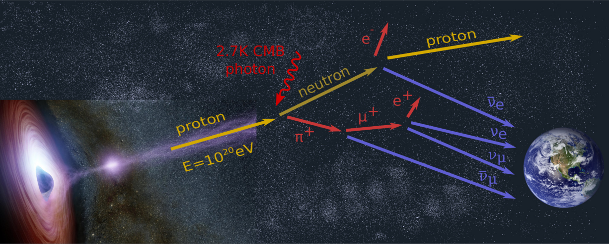

Table of Contents:
Introduction
Ultra-High Energy Cosmic Rays (UHECRs) can also produce UHE neutrinos by interacting with the Cosmic Microwave Background (CMB). The flux of these cosmogenic neutrinos has imprinted information about the composition of UHECRs and their sources. Cosmogenic neutrinos are guaranteed to exist, but they have yet to have been observed. Furthermore, UHE neutrinos probe neutrino physics at the highest energies, which could hint at new physics beyond the Standard Model or superheavy dark matter.
